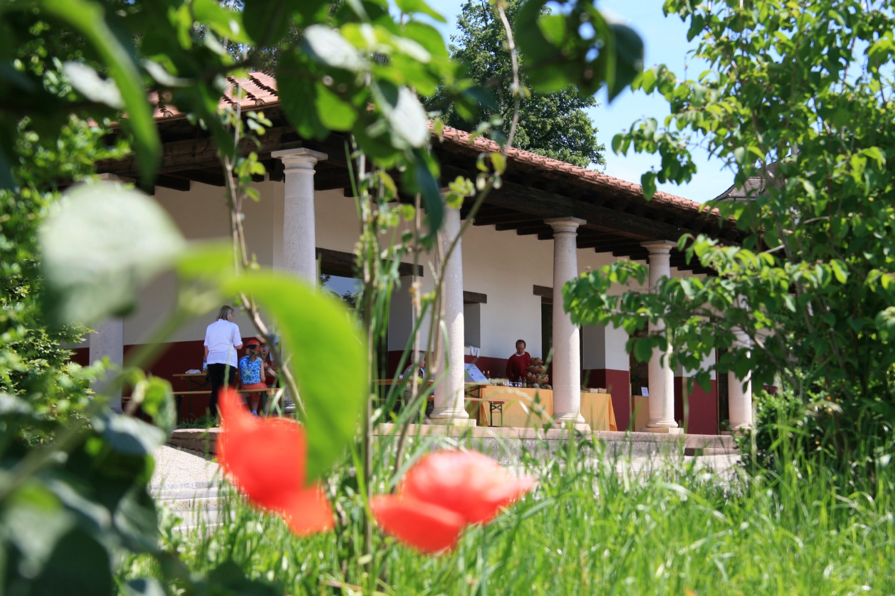

Klicken Sie oben rechts auf «Menü». Ebene 1 wählen, dann ein Thema mit Pfeil für die dritte Ebene. Esc schliesst.

Klicken Sie oben rechts auf «Menü». Ebene 1 wählen, dann ein Thema mit Pfeil für die dritte Ebene. Esc schliesst.
Volle Viewport-Grösse, scrollbar. Das Hintergrundbild wechselt mit dem gewählten Bereich. Öffnungszeiten werden aus dem heutigen Datum berechnet. Barrierefreiheit im Menü ersetzt den Inhalt; erneuter Klick (oder «Menü») zeigt wieder das Menü, das Burger-Symbol ist so lange ausgeblendet. Mobile: Ebene 1 klappt auf (Akkordeon), Ebene 3 schiebt als eigene Ansicht mit «Zurück» herein (Vorbild harvard.edu).
| Was | Auslöser | Dauer · Easing |
|---|---|---|
| Overlay blendet ein, Bild zoomt von 108 % auf 100 % | Klick Menü | 0.3 s / 1.6 s · AR.ease.out |
| Ebene 1 steigt zeilenweise aus der Kante auf | +0.06 s, 45 ms gestaffelt | 0.7 s · AR.ease.out |
| Rechte Spalte + Fuss blenden von unten ein | +0.15 s, 35 ms gestaffelt | 0.4 s · AR.ease.out |
| Burger → Kreuz | mit dem Öffnen | 0.3 s · AR.ease.inOut |
| Ebene 2 gleitet von rechts ein (16 px), Einträge gestaffelt | Hover (Desktop, 80 ms Verzögerung) oder Klick | 0.35 s · AR.ease.out |
| Hintergrundbild überblendet | mit Ebene 1 | 0.6 s · AR.ease.out |
| Ebene 3 in Spalte 10, Ebene 2 dimmt auf 40 % | Klick auf Eintrag mit Pfeil | 0.35 s · AR.ease.out |
| Mobile: Akkordeon öffnet (Höhe), Inhalt folgt | Klick Ebene 1 | 0.35 s · AR.ease.out |
| Mobile: Ansicht schiebt 24 px seitlich | Ebene 3 / Zurück | 0.3 s · AR.ease.out |
| Barrierefreiheit ↔ Menü überblenden | Klick Barrierefreiheit | 0.2 s aus / 0.3 s ein |
| Schliessen: Overlay blendet aus | Kreuz, Esc | 0.25 s · AR.ease.out |
| «Heute geöffnet»: Ring hinter dem Uhr-Icon pulsiert (AR Grün, Scale 1 → 2, Deckkraft 0.45 → 0, ab 70 % Pause), gleicher Puls wie Hero Museen | Endlosschleife, nur wenn geöffnet | CSS @keyframes pulse 2.4 s · cubic-bezier(0.23, 1, 0.32, 1) (= --ease-out) |
| Reduzierte Bewegung | Nur Überblendungen: kein Zoom, kein Aufsteigen, kein seitliches Gleiten. Der Öffnungszeiten-Punkt steht still (kein Puls). | |